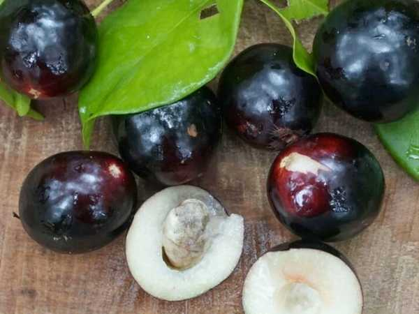

Prunus africana
Common Names: African Cherry, Pygeum, Red Stinkwood, Iron Wood
Local Name: Muiri (Kikuyu), Pygeum
Family: Rosaceae
Origin: Afromontane forests of tropical and southern Africa, Madagascar
Plant Type: Perennial evergreen tree
Variety: Wild species; valued for medicinal bark and timber
Average Lifespan: 100+ years
| Growth Habit | Large evergreen canopy tree; straight trunk with dark fissured bark |
| Plant Size | 10–40 meters tall; trunk diameter up to 1 meter |
| Leaves | Alternate, elliptic, 5–12 cm long, leathery, dark glossy green; crushed leaves smell of almonds |
| Flowers | Small, white to greenish, in axillary racemes 5–8 cm long |
| Flower Characteristics | Fragrant; attract bees and other insects; bloom with new leaf flush |
| Fruit | Small drupe, 7–13 mm diameter, thin bitter flesh surrounding a single stone |
| Fruit Color | Green turning red to dark brown-black when ripe |
| Seed Characteristics | Single hard stone; dispersed by birds and monkeys |
| Root System | Deep taproot with extensive lateral roots; stabilises mountain slopes |
| Climate | Tropical highland (montane); cool, moist conditions; 1500–3000 m elevation |
| Temperature Range | 10–25°C ideal; tolerates light frost at higher elevations |
| Rainfall Requirement | 1000–2500 mm annually; prefers consistent moisture |
| Soil Type | Deep, well-drained volcanic or forest soils rich in organic matter |
| Soil pH Preference | 5.0–6.5 |
| Sun Requirement | Full sun to partial shade; shade-tolerant when young |
| Spacing | 8–12 meters between trees |
| Irrigation Method | Rain-fed in natural habitat; supplemental irrigation in dry areas |
| Water Requirement | Moderate to high; prefers consistent moisture |
| Can it Grow in Pots? | Young seedlings only; eventually needs ground planting (large tree) |
| Fertilizer Schedule | Annual application of organic matter; minimal inputs in forest settings |
| Recommended Organic Fertilizers | Compost, leaf mould, forest floor mulch |
| Pesticide Frequency | Not needed in natural settings |
| Recommended Organic Pesticides | Not typically required |
| Mulching Practice | Natural leaf litter; forest floor provides mulch |
| Training System | Natural form; no training needed |
| Pruning Time | Not typically pruned; sustainable bark harvesting practices important |
| How to Prune | Remove dead branches only; bark harvesting must follow sustainable protocols |
| Common Pests | Bark beetles, defoliating caterpillars (rare in healthy trees) |
| Common Diseases | Root rot in waterlogged soil; bark damage from unsustainable harvesting |
| Disease Prevention & Remedies | Good drainage; sustainable bark harvesting; protect from over-exploitation |
| Flowering Months | October–February (varies by altitude and region) |
| Fruiting Season | March–July; 90–120 days after flowering |
| Days to Harvest | 90–120 days from flowering |
| Harvest Indicators | Fruit turns dark red to black; consumed mainly by birds and wildlife |
| Average Yield per Plant | Fruit yield not commercially significant; bark is the primary harvest |
| Pollination Type | Insect pollination |
| Pollination Notes | Bees are primary pollinators; flowers are important nectar source in montane forests |
| Pollination Details | Insect-pollinated; self-fertile; cross-pollination improves seed set |
| Propagation by Seeds | Seeds require 2–3 months cold stratification; germinate in 4–8 weeks after treatment |
| Propagation by Cuttings | Stem cuttings possible with rooting hormone; moderate success rate |
| Propagation by Grafting | Not commonly grafted; seedlings are the standard propagation method |
| Water Usage | Moderate; important for watershed protection in montane forests |
| Soil Conservation Practices | Critical for mountain slope stabilisation; prevents landslides |
| Organic Practices Used | Wild-harvested; sustainable bark harvesting protocols essential |
| Companion Plants | Native montane forest species; coffee as understory crop |
| Biodiversity Benefits | Keystone species in Afromontane forests; fruit supports birds and primates; CITES Appendix II listed |
| Commercial Production Regions | Cameroon, Kenya, Madagascar, Democratic Republic of Congo, Ethiopia |
| Market Uses | Medicinal bark extract (Pygeum), timber, reforestation |
| Processing Uses | Bark extract for pharmaceutical use (prostate health supplements); timber for construction |
| Market Value (Approx.) | Bark: $2–5 per kg (international market); high pharmaceutical value |
| Symbolism | Sacred tree in many African cultures; symbol of forest conservation |
| Traditional Uses | Bark used in African traditional medicine for urinary and prostate conditions; timber for building |
| Calories | Fruit not commonly consumed by humans |
| Dietary Fiber | Present in small fruit |
| Vitamin C | Moderate amounts in fruit |
| Vitamin A | Trace amounts |
| Iron | Present in bark extract |
| Potassium | Present in bark and fruit |
| Antioxidants | Bark rich in phytosterols (beta-sitosterol), pentacyclic triterpenes, ferulic acid esters |
| Other Key Nutrients | Phytosterols, tannins, fatty acids in bark extract |
| Anxiety & Sleep | Not a primary use |
| Immune Support | Bark extract shows immunomodulatory properties in studies |
| Anti-inflammatory Properties | Bark extract (Pygeum) is a well-studied anti-inflammatory; used for benign prostatic hyperplasia (BPH) |
| Heart Health | Phytosterols in bark may help lower cholesterol |
| Digestive Health | Bark decoction used traditionally for stomach ailments |
Disclaimer: Information provided is for educational purposes only and not a substitute for medical advice. Prunus africana is CITES-listed; sustainable sourcing is essential.
Add your field observations here.